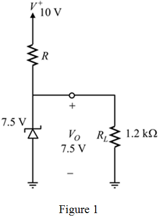
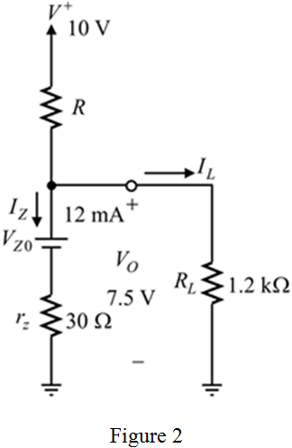
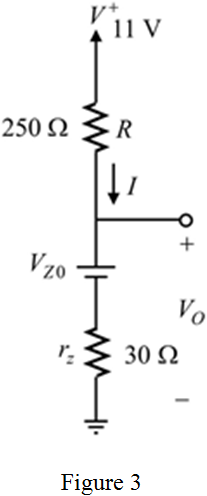
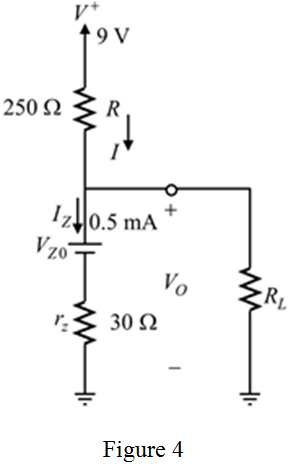

Step 1:
Draw the circuit diagram for Zener regulator.

Step 2:
Refer to Figure 4.17 in the textbook for the diode  characteristic.
characteristic.
The analytical description for the Zener voltage  is,
is,
Here,  is the point at which the straight line of slop intersects the voltage axis. It is almost equal to the knee voltage ,
is the point at which the straight line of slop intersects the voltage axis. It is almost equal to the knee voltage ,  is the incremental resistance, and
is the incremental resistance, and  is the Zener current.
is the Zener current.
The equation applies only for and .
Here, is the knee current.
Step 3:
Replace the Zener diode with the equivalent model and draw the equivalent circuit.

Step 4:
Substitute 7.5 V for  ,
,  for
for  , and 12 mA for
, and 12 mA for  in the equation of
in the equation of  to find the value of
to find the value of  .
.
Calculate the value of load current  .
.
Substitute 7.5 V for  , and
, and  for
for  .
.
Step 5:
The relation between the currents in the circuit is,
The value of  is constant due to constant value of source voltage and resistance
is constant due to constant value of source voltage and resistance  . Therefore, the change in load current is compensated by the Zener current to balance the equation.
. Therefore, the change in load current is compensated by the Zener current to balance the equation.
Select a value for the current  to match this equation and to satisfy the conditions of analytical model equation .
to match this equation and to satisfy the conditions of analytical model equation .
Take 10 mA for  .
.
Therefore,
Step 6:
The selection of value for

is proper because the value of is greater than .
Calculate the value of the resistance  .
.
Substitute 10 V for , 7.5 V for and 10 mA for  .
.
Therefore, the value of resistance  is
is  .
.
Step 7:
Consider that the supply voltage is changed by 10% (high or low).
Calculate the change in the output voltage.
Substitute for , for  , and
, and  for
for  .
.
Therefore, the value of regulator output voltage  is when the input voltage is 10% high and when the input voltage is 10% low.
is when the input voltage is 10% high and when the input voltage is 10% low.
Step 8:
Consider that the supply voltage is 10% high and the load is removed .
Draw the modified circuit diagram.

Step 9:
Calculate the value of current  .
.
Calculate the value of the output voltage.

Therefore, the value of the output voltage  is when the supply voltage is 10% high and the load is removed.
is when the supply voltage is 10% high and the load is removed.
Step 10:
Consider that the supply voltage is 10% low and .
Draw the circuit diagram to find the minimum value of the load resistor.

Step 11:
Calculate the value of the output voltage.
Calculate the value of current  .
.
Calculate the value of load resistor.
Therefore, the minimum value of the load resistor when the supply voltage is 10% low is .